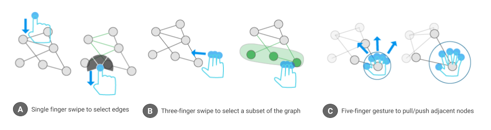

John Thompson, Arjun Srinivasan, and John Stasko
Touch-based displays are becoming a popular medium for interacting with visualizations. Network visualizations are a frequently used class of visualizations across domains to explore entities and relationships between them. However, little work has been done in exploring the design of network visualizations and corresponding interactive tasks such as selection, browsing, and navigation on touch-based displays. Network visualizations on touch-based displays are usually implemented by porting the conventional pointer based interactions as-is to a touch environment and replacing the mouse cursor with a finger. However, this approach does not fully utilize the potential of naturalistic multi-touch gestures afforded by touch displays. We present a set of single hand, multi-touch gestures for interactive exploration of network visualizations and employ these in a prototype system, Tangraphe. We discuss the proposed interactions and how they facilitate a variety of commonly performed network visualization tasks including selection, navigation, adjacency-based exploration, and layout modification. We also discuss advantages of and potential extensions to the proposed set of one-handed interactions including leveraging the non-dominant hand for enhanced interaction, incorporation of additional input modalities, and integration with other devices.